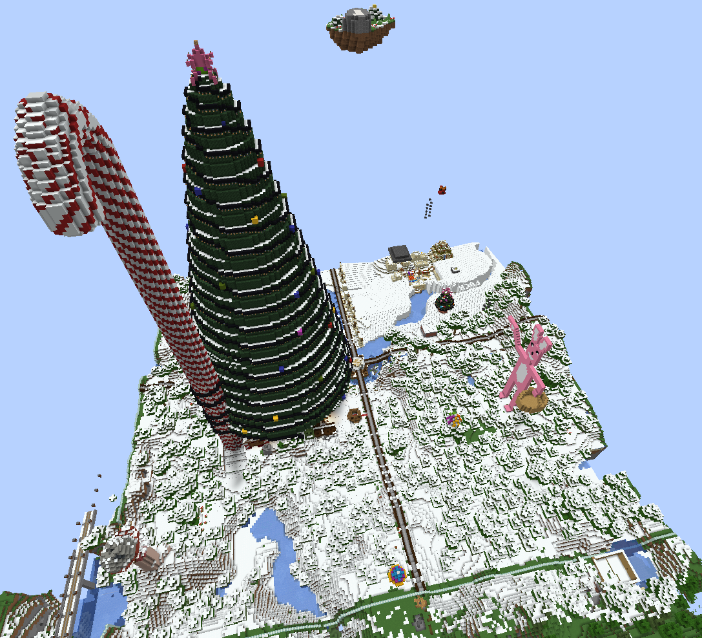

Server Info
About CrispyMiners
CrispyMiners was founded in February 2019 by a small group of ragtag sons of bitches that decided they did in fact want to play Minecraft again. The basis of the server came from the server AlphaCrafters (learn more about AlphaCrafters on the "AlphaCrafters" page in the "Lore" category of the guides). Since the beginning, the server has been owned and operated by Markaroli and named after everyone's favorite Norwegian, Crispy Henrikksen. The server has changed and evolved since its creation and will continue to change and update along with Minecraft itself. This server is adult-oriented in the sense that vulgar language and innuendos are both allowed and encouraged.
Technical Details
Listed below are some of the more technical details of the server for those that may be interested.
Server Host: Skynode
Server Location: New York City, USA
RAM: 8GB DDR4
Restart Times: 12 AM and 12 PM EST
Discord
Like all great servers, we also have a discord! You can join the discord via https://discord.gg/6XrQcWV to join in on the fun plus get up to date information on server updates and events! The server is divided into two sections: Server shit and General shit. Below is a short description of each channel in the discord.
#rules: The rules of the discord as well as the Minecraft server rules.
#announcements: Any announcements relating to the Minecraft server or the discord. These can include things like scheduled downtime, updates, or server events.
#changelog: The list of changes to the server / discord.
#suggestions: Here you can throw out any suggestions you have for the server, the discord, or the website. The only exception is no suggestions about auto broadcast messages :)
#auto-broadcast-message-suggestions: Here you can put any messages you'd like to be added to the auto broadcast message system on the server.
#bugs: List any bugs you find here for staff to look into and fix.
#general: This channel is for any kind of general conversation that doesn't fit anywhere else.
#memez: Got a dank meme? Post it here!
#base-updates: This channel is meant for screenshots of your Minecraft base!
#game-screenshots: This channel is for screenshots of ANY game (including Minecraft).
#pain-and-suffering: If it pains you and causes suffering, this is where it belongs.
#cool-as-fuck-shit: This channel is essentially the opposite of #pain-and-suffering. Only cool things allowed here :)
#free-shit: Post any free promotions here! Typically this is free games offered on platforms like Steam, Humble Bundle, and Epic. If it costs anything, it doesn't belong in #free-shit.
#music-recommendations: The spot to put any good songs you discover! (Hint: many of us are into metal).
#brothers-klan: This channel serves as the base of operations for the bRoThErS klan. For more info, see the "The bRoThErS Klan" page in the "Lore" category of the guides.
#coronavirus-updates: This temporary channel details the COVID-19 pandemic of 2020.
#botty-boiz: Bot commands go here! This will mainly be the music bot, Stanley Henrikksen.
Be sure to read the rules of the discord and enjoy participating! We also have two voice channels to hang out and talk with your voice! You can play music in the voice channels as well using the bot, Stanley Henrikksen, by going into the #botty-boiz channel and typing -play {song name or url}. Enjoy!
Staff
The CrispyMiners staff team is small, but dedicated, to providing a VERY crispy experience! The team consists of Markaroli (owner and operator), MrArcane (developer), DarthChad (Chadmin), LordShaiya (Chadman and Crispy himself), darkbladelink (mod), plus honorary staff members Zonemann and Deca4531! If you have any questions or issues, those players should be your number one destination.
Spawn
At first glance, the CrispyMiners spawn is... chaotic. Spawn is centered at (0, 0) and goes out 128 blocks in all four directions. It is a protected area so players cannot build here. The first thing you'll notice is that you spawn in a bowl of oats resting on a rowboat in the Great Spawn River. To the north is the 2019 Crispy Christmas Tree towering over the Smurf Village. This entire area has a very large, very difficult, very unforgiving maze as well, hidden deep in the Smurf Village. In the northwest corner of Spawn is Dick Hill, home to the legendary Spawn Dick. To the South is Erik, the 2020 Crispy Easter Bunny. Finally, the southeast corner of Spawn is home to the desert village in the snow where the 2019 Crispy 4th of July fireworks were set off. Spawn is of course always changing and growing, so you never know what might show up!

World Info
Our world is currently set to have a world border of 40,000 blocks in all four directions. We use large biomes as well to enhance the experience and to create some fun terrain. The first 20,000 in each direction was generated during Minecraft 1.13 with a large trench surrounding this terrain. After 20,000 blocks the world is generated in 1.14 and 1.15. World borders are increased anytime a Minecraft update comes out that adds new things to the terrain. Our Nether world will also be reset upon the update to Minecraft 1.16. Our End world resets at least once every few months to allow all players an opportunity at looting the end cities.